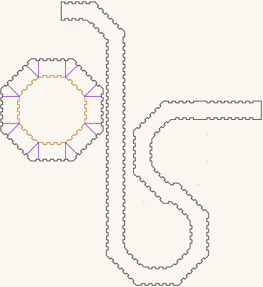

Octagonal trumpet
The trumpet form of the octagonal torus: the same 25 × 25mm square channel and the same R 90 octagonal plate, opened out into a flaring horn instead of closed into a ring. Cut from 3mm Baltic birch plywood, millimetre-true at 1 user unit = 1mm, so it prints and cuts at real size.
The torus writeup describes the cut that turns one into the other. This is the result as its own sheet.
Get the files
- Everything as a ZIP — the cut file and this page.
- Repository — if you want to change the flare or the plate.
- Or click the picture below to download the cut file.
Released under CC0 1.0 — do what you like with it, no attribution needed. Built for LaserMadeMusic.
The sheet
Click it to download the cut file. It is a display rendering — the cut file draws a hairline on no background, which a browser shows almost invisibly, so this is thickened and painted onto a light ground. Geometry and sheet position are untouched. The three lightest cut-order inks — green, orange and cyan — are darkened here. At full strength they fall below the contrast a light background can carry, so the cut order could not be read off them. Hue and sequence are unchanged, and the cut file keeps the exact values.
 |
| octagonal-trumpet.svg · 534.6 × 478.6mm sheet |
{kind=link}
What is on it
Measured out of the file itself:
| Part | Count | Size |
|---|---|---|
| Octagonal plate, finger-jointed rim | 1 | 172.298mm across flats — R 90 |
| Its central hole | 1 | 116.298mm across flats — R 62.94 |
| Curved flare band, finger-jointed on both edges | 1 | 507.824 × 306.984mm |
The sheet is 534.637 × 478.599mm and every part sits inside it, with no geometry hanging off the page.
The plate is the torus's plate. Rim at apothem 86.149, hole at 58.149, and the same joint phase along every face — so the side panels cut for the torus mate with this plate too, and a dry-fit done for one is a dry-fit done for both.
Colour is the cut order
Blue engraves, then green → orange → cyan → black, with black always the cut that frees the part and violet always skip. That sequence is the same in every LaserMadeMusic repository, and a file uses only the stages it needs. This one needs two, and has nothing to engrave.
| Colour | What | Why then | |
|---|---|---|---|
| 1 | orange #ff8000 | the plate's central hole | cut while the plate is still held by the sheet |
| 2 | black #000000 | the plate rim and the flare band | frees them, so they go last |
Holes before rims is the whole of the rule here: once the black rim is through, the plate is loose, and anything still to be cut inside it will move.
Give both colours an explicit operation. A per-colour job silently skips any colour you leave unmapped — leave orange out and you get a plate with no bore.
The violet lines are not cuts
The plate carries 16 violet #8000ff lines: one at the middle of every flat and one at every corner, each a single straight line from the hole edge out to the rim. Together they divide the wall into sixteen segments.
They are the optional cuts. Take them and the plate comes apart into segments; leave them and it stays whole. Marking them explicitly is the point — "not cut" is then a decision recorded in the drawing rather than a colour someone forgot to map. Turn one green to cut it, and leave the rest violet.
Before you cut
Cut this in 3mm Baltic birch plywood. That is what it is built in, and the void-free core earns its place at the finger joints: a void landing in a tooth that has to carry the flare is a break waiting to happen.
Grain direction is a real choice here, because the band curves. Run the face grain along its length and it bends more willingly; run it across and the band resists and holds its shape harder. Neither is wrong — they give different flares, and it is worth cutting one of each before deciding.
Dry-fit before committing a sheet. The plate's tabs around the hole should drop into the band's notches without forcing. If they are tight, that is material thickness and kerf rather than the drawing: nominal 3mm ply is commonly 2.7–3.2mm, and the joint is cut for exactly 3.000.
Files
octagonal-trumpet.svg | the cut-ready sheet |
previews/ | display rendering — not a cut file |
index.md · index.html | this page; the markdown is the source |